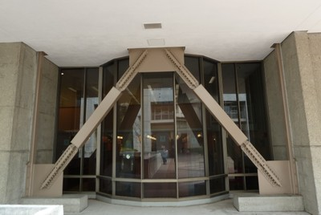
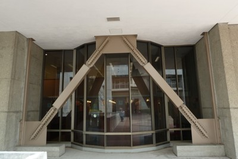
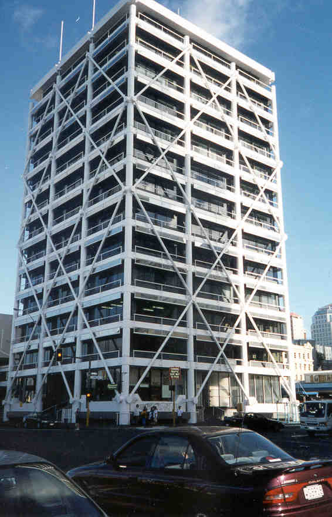
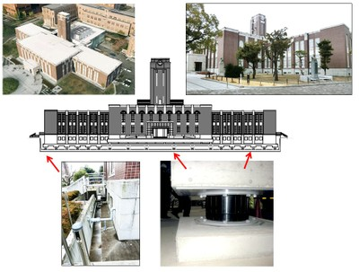
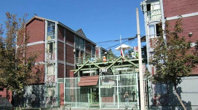
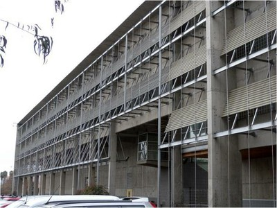
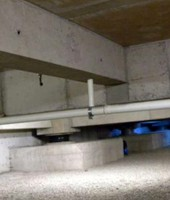
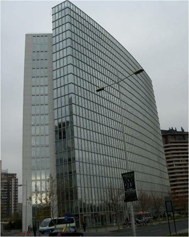
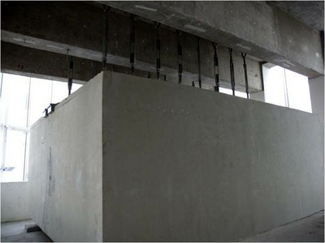

Equipped with base isolation and/or energy dissipation devices [DBD]
The building is equipped with base isolation and/or energy dissipation devices; this is an alternative to conventional seismic design approach, where buildings are designed for ductile performance. Base isolation reduces seismic effects in a building by “decoupling” it from the ground. This is achieved by installing isolation devices (isolators), usually at the base level of a building. In some cases, isolation devices are provided above the base. Base isolation devices are often not visible from the building exterior.
Energy dissipation devices (often called seismic dampers) reduce seismic effects in a building by providing supplemental damping. Energy dissipation devices act in a similar manner like shock absorbers (brakes) in cars. There are several types of devices and they are more often visible (particularly in retrofitted buildings) and look similar to diagonal steel braces.
 

Unbonded braces (also known as Nippon braces) as a retrofit solution for the Hildebrand Hall, University of Berkeley, California (S.Brzev)

Energy dissipation devices were installed in the Union House, Auckland, New Zealand (S. Brzev)

Kyoto University Clock Tower (Japan) is a 1925 concrete building retrofitted in 2000s using base isolation (drawing by M. Nakashima and photos by C. Scawthorn)

The San Francisco International Airport (USA) is equipped with friction pendulum isolation devices (S. Brzev)

Edificio Comunidad Andalucía, a four-storey masonry building in Santiago, Chile was built in 1992 and it is equipped with the high damping rubber isolation devices; an exterior view of the building is shown left (S. Brzev) and a floor plan showing isolator locations is shown right (M. Moroni)

Edificio San Agustín (Catholic University of Chile) is concrete building in Santiago, Chile built in 2001 and equipped with lead core base isolation devices; the left photo shows the building and the right photo shows a typical isolation device located in the basement (S. Brzev)


Parque Araucano is a 22-storey concrete tower in Santiago, Chile equipped with two tuned mass dampers at the roof level; the left photo shows the building and the right one shows a tuned mass damper suspended from the roof (S. Brzev)